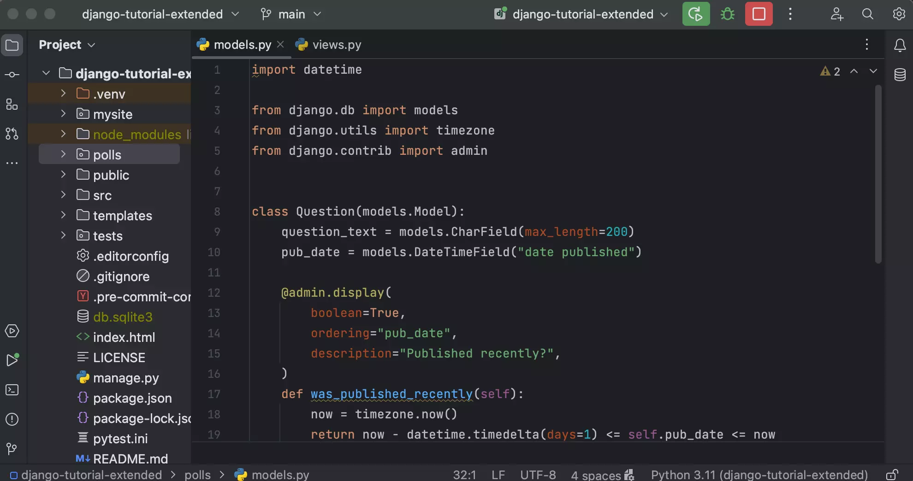

Редакторы кода и IDE

Что есть код?
Файлы с кодом это просто текстовые файлы
Вы можете редактировать файл с исходным кодом с помощью любого текстового редактора
Даже с помощью обычного блокнота
Но удобнее делать это с помощью специальных инструментов
Инструменты для редактирования кода
Интерактивные среды для работы с кодом
Консольные редакторы кода
Редакторы кода
Интегрированные среды разработки (IDE)
Online редакторы кода и IDE
Интерактивные среды для работы с кодом
python3ipython3jupyter-notebookjupyterlab
Консольные редакторы кода
Редактирования файлов непосредственно из командной строки: реликт темной эры IT?
Маломощные и встраиваемые системы
Серверные решения без графического интерфейса
Удаленное редактирование при слабой пропускной способности канала
For Force Users: Powerfully IDE на базе Vim and Emacs
Что использовать?
nanoиpicoпростые в использовании, хорошо подходит для не регулярного использованияvi(безm) иногда является дефолтным (и единственным) доступным редактором на*nixvim,emacsи их клоны для True Geek.
Редакторы кода
Предоставляют легковесную возможность редактировать код.
Функциональность обеспечивается за счет плагинов и расширений.
VS Code, Notepad++, Sublime Text, Atom, Vim, Emacs и др.
Интегрированные среды разработки (IDE)
Представляют собой полнофункциональную среду для всех аспектов работы с кодом.
Объединяют множество инструментов, необходимых на разных этапах проекта.
Работают не с отдельным файлами кода, а с проектом целиком
PyCharm, Visual Studio, Eclipse и др.
Редакторы кода vs IDE
С помощью плагинов можно достичь схожей функциональности
Online редакторы кода и IDE
Онлайн-редакторы - такие как встроенные редактор на GitHub или Visual Studio Code for the Web.
Позволяют редактировать файлы прямо в браузере без установки на компьютер.
Хранение данных в облаке.
Возможность совместной работы над кодом.
Полезные ссылки
https://habr.com/ru/companies/serverspace/articles/693374/